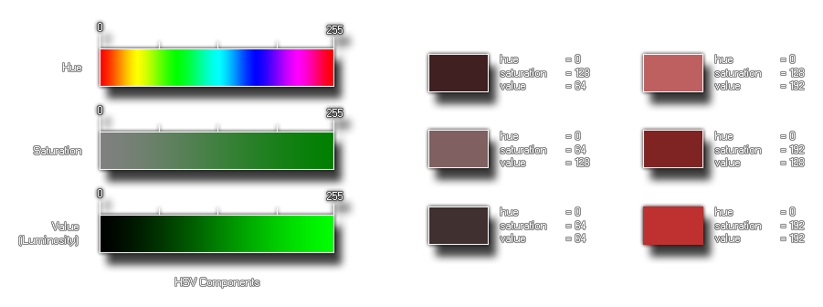

Syntax:
make_colour_hsv(hue, sat, val);
| Streit | Beschreibung |
|---|---|
| hue | Der Farbton der Farbe |
| sat | Wie gesättigt ist die Farbe? |
| val | Wie dunkel ist die Farbe? |
Rückgabewert: Wert
GameMaker Studio 2 bietet diese Funktion (wie auch andere), damit der Benutzer seine eigenen Farben erstellen kann. Diese spezielle Funktion benötigt drei Komponenten, den Farbton, die Sättigung und den Wert (auch bekannt als "Leuchtkraft"), um die gewünschte Farbe zu erzeugen. Diese Werte werden als zwischen 0 und 255 angenommen, so dass Sie 16.777.216 (256 * 256 * 256) Farben damit machen können! Unten sehen Sie ein Bild davon, wie diese Komponenten aussehen, wenn sie getrennt sind:  Das Bild auf der linken Seite ist eine Aufschlüsselung der einzelnen Komponenten der Funktion, und dann auf der rechten Seite ist eine Illustration, wie sich das Ändern dieser Komponenten auf die Endfarbe auswirkt. Wie Sie sehen, können wir auch ohne Änderung des Farbtons (er bleibt bei 0, rot) die Farbe mit den anderen beiden Einstellungen dramatisch verändern, wobei die Sättigung den Farbton von Grau (0) zu einem reinen Ton (255) ändert. und mit dem Wert, der es von dunkler (0) zu heller (255) macht.
col = make_colour_hsv(100, 145, 255);
Der obige Code verwendet die Funktion, um eine Farbe zu erstellen und ihren Wert in der Variablen "col" zur späteren Verwendung zu speichern.